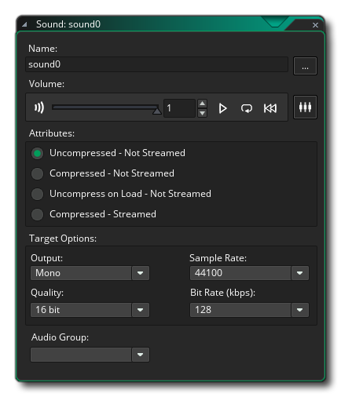
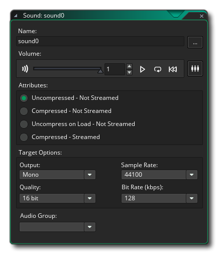

Creating a sound resource is exactly the same as creating any other resource. Simply go to the Resource Tree and right click  on the Sound resource and click Create. This will open up the Sound Editor:

on the Sound resource and click Create. This will open up the Sound Editor:

First thing to do is the name this new resource, and since it's for when the enemy dies we'll call it snd_death, so name it that now. You can then click on the Import button to bring up a file selector and look for an appropriate sound which as mentioned at the start should be a *.wav format file (remember, while following this tutorial the file explorer should take you to the TutorialResources folder automatically where you can find the sounds used in the "Sound" sub-folder). If you have any issues, you can also find the sound here.
Once you have named the resource and added the file, you can use the audio preview buttons in the editor to listen to the sound and set its volume:
The rest of the options here we can leave at their default values, but if you want to find out more about them then hit  to open the manual and go to the section on the Sound Editor. You can close the Sound Editor now as we are finished with the resource and are ready to add it to our game.
to open the manual and go to the section on the Sound Editor. You can close the Sound Editor now as we are finished with the resource and are ready to add it to our game.